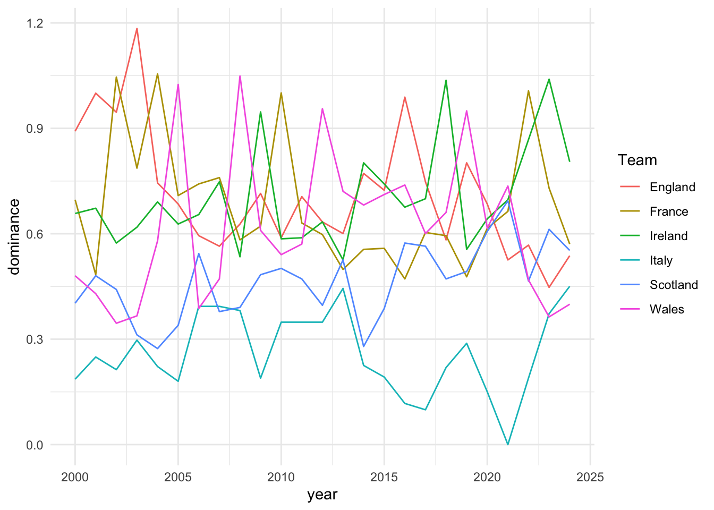

library(dplyr)
library(ggplot2)
library(tidyr)
library(stringr)
library(readr)
sixn <- tibble(
year = 2000:2024,
england = c(
1, 1, 2, 1, 3, 4, 4, 3, 2, 2, 3, 1, rep(2, 4), 1, 1, 5, 2, 1, 5, 3, 4, 3
),
france = c(
2, 5, 1, 3, 1, 2, 1, 1, 3, 3, 1, 2, 4, 6, 4, 4, 5, 3, 4, 4, 2, 2, 1, 2, 2
),
ireland = c(
3, 2, 3, 2, 2, 3, 2, 2, 4, 1, 2, 3, 3, 5, 1, 1, 3, 2, 1, 3, 3, 3, 2, 1, 1
),
italy = c(rep(6, 3), 5, 5, 6, 6, 4, rep(6, 4), 5, 4, 6, 5, rep(6, 8), 5),
scotland = c(
5, 3, 4, 4, 6, 5, 3, 6, rep(5, 4), 6, 3, 5, 6, 5, 5, 4, 5, rep(4, 3), 3, 4
),
wales = c(
4, 4, 5, 6, 4, 1, 5, 5, 1, rep(4, 3), 1, 1, 3, 3, 2, 5, 2, 1, 5, 1, 5, 5, 6
)
)Graphing Six Nations History
head(sixn)# A tibble: 6 × 7
year england france ireland italy scotland wales
<int> <dbl> <dbl> <dbl> <dbl> <dbl> <dbl>
1 2000 1 2 3 6 5 4
2 2001 1 5 2 6 3 4
3 2002 2 1 3 6 4 5
4 2003 1 3 2 5 4 6
5 2004 3 1 2 5 6 4
6 2005 4 2 3 6 5 1sixn_long <- pivot_longer(sixn, cols = c(england:wales))head(sixn_long)# A tibble: 6 × 3
year name value
<int> <chr> <dbl>
1 2000 england 1
2 2000 france 2
3 2000 ireland 3
4 2000 italy 6
5 2000 scotland 5
6 2000 wales 4sixn_long <- sixn_long |> mutate(value = as.character(value))ggplot(sixn_long, aes(x = year, y = value, group = name, colour = name)) +
geom_line() +
geom_point()ggplot(sixn_long, aes(x = year, y = value, group = name, colour = name)) +
geom_line() +
geom_point() +
scale_y_discrete(limits=rev)sixn_long <- mutate(
sixn_long, year = as.character(year)
)ggplot(sixn_long, aes(x = year, y = value, group = name, colour = name)) +
geom_line() +
geom_point() +
scale_y_discrete(limits=rev)library(lubridate)
library(glue)
sixn_dates <- sixn_long |>
mutate(
year = glue("{year}-01-01"),
year = as_datetime(year)
)ggplot(sixn_dates, aes(x = year, y = value, group = name, colour = name)) +
geom_line() +
geom_point() +
scale_y_discrete(limits=rev) +
scale_x_datetime(date_breaks = "2 years", date_labels = "%Y")Scotland’s navy is #1D4976, Ireland’s crest #296044, the famous Wales red is #DB4733, we’ll go with white for England, which is #FFFFFF.
Both France and Italy use a few colours, Italy’s blue from their crest is #275DA1 and France’s blue is #133472. That’s three blues in there, let’s hope we can tell them apart.
ggplot(sixn_dates, aes(x = year, y = value, group = name, colour = name)) +
geom_line() +
geom_point() +
scale_y_discrete(limits=rev) +
scale_x_datetime(date_breaks = "2 years", date_labels = "%Y") +
scale_colour_manual(values = c("#FFFFFF", "#133472", "#296044", "#275DA1", "#1D4976", "#DB4733"))
ggplot(sixn_dates, aes(x = year, y = value, group = name, colour = name)) +
geom_line() +
geom_point() +
scale_y_discrete(limits=rev) +
scale_x_datetime(date_breaks = "2 years", date_labels = "%Y") +
scale_colour_manual(values = c("#FFFFFF", "#133472", "#296044", "#275DA1", "#1D4976", "#DB4733"))+
theme(panel.grid.major = element_blank(), panel.grid.minor = element_blank())ggplot(sixn_dates, aes(x = year, y = value, group = name, colour = name)) +
geom_line() +
geom_point() +
scale_y_discrete(limits=rev) +
scale_x_datetime(date_breaks = "2 years", date_labels = "%Y") +
scale_colour_manual(values = c("#FFFFFF", "#133472", "#296044", "#275DA1", "#1D4976", "#DB4733")) +
theme(
panel.grid.major = element_blank(), panel.grid.minor = element_blank(),
panel.background = element_rect(fill = "#d9d9d9", colour = "#8c8c8c")
)sixn_dates |>
mutate(
name = str_to_title(name),
yy = year(year),
slam = case_when(
yy %in% c(2002, 2004, 2010, 2022) & name == "France" ~ TRUE,
yy %in% c(2003, 2016) & name == "England" ~ TRUE,
yy %in% c(2005, 2008, 2012, 2019) & name == "Wales" ~ TRUE,
yy %in% c(2009, 2018, 2023) & name == "Ireland" ~ TRUE,
.default = FALSE
)
) |>
ggplot(aes(x = year, y = value, group = name, fill = slam)) +
geom_line() +
geom_point(shape = 21, size = 3) +
scale_y_discrete(limits=rev) +
scale_x_datetime(date_breaks = "4 years", date_labels = "%Y") +
facet_wrap(~name, axis.labels = "all_y") +
scale_fill_manual(values = c("ghostwhite", "gold")) +
guides(fill = "none") +
geom_smooth(se = FALSE) +
theme_minimal() +
labs(x = NULL, y = NULL)ToL article
So Barnes talks about point difference (https://www.thetimes.co.uk/article/ireland-defence-coach-simon-easterby-first-pick-lions-tour-zjf26pkn0). Let’s get that from data copied from https://raw.githubusercontent.com/pymc-devs/pymc-examples/main/examples/data/rugby.csv.
So that’s nice but it’s only a few years. Let’s go to Wikipedia (support it!) to get all the years.
library(rvest)
Attaching package: 'rvest'The following object is masked from 'package:readr':
guess_encodinglibrary(glue)
library(purrr)
period <- 2000:2024
urls <- map(period, ~{
glue("https://en.wikipedia.org/wiki/{.x}_Six_Nations_Championship")
})
pages <- map(urls, read_html)tbl <- '//*[@id="mw-content-text"]/div[1]/h2[3]/following-sibling::table'
results <- map(pages, ~{html_node(.x, xpath=tbl)}) |>
map(html_table)
for (i in seq_along(period)) {
results[[i]]$year <- period[i]
}
rugger <- list_rbind(results) |>
select(Pos:year, -T) |>
mutate(
PD = PF - PA,
slam = case_when(
year %in% c(2002, 2004, 2010, 2022) & Team == "France" ~ 0.25,
year %in% c(2003, 2016) & Team == "England" ~ 0.25,
year %in% c(2005, 2008, 2012, 2019) & Team == "Wales" ~ 0.25,
year %in% c(2009, 2018, 2023) & Team == "Ireland" ~ 0.25,
.default = 0
)
)head(rugger)# A tibble: 6 × 12
Pos Team Pld W D L PF PA PD Pts year slam
<int> <chr> <int> <int> <int> <int> <int> <int> <int> <int> <int> <dbl>
1 1 England 5 4 0 1 183 70 113 8 2000 0
2 2 France 5 3 0 2 140 92 48 6 2000 0
3 3 Ireland 5 3 0 2 168 133 35 6 2000 0
4 4 Wales 5 3 0 2 111 135 -24 6 2000 0
5 5 Scotland 5 1 0 4 95 145 -50 2 2000 0
6 6 Italy 5 1 0 4 106 228 -122 2 2000 0You can get it here.
rugger |>
ggplot(aes(x = PD, group = Team, fill = Team)) +
geom_boxplot() +
theme_minimal()ok, so let’s create a “dominance index”. We’ll go naively here since we don’t want to go too deep down the rabbit-hole of creating indices. I think a Grand Slam is generally regarding as a major achievement, so let’s use that, as well as the points difference (PD), which we can rescale. Since slam is 0.25 or 0, let’s rescale PD to between 0 and 1. We’ll add the two to get our index.
library(scales)
rugger <- rugger |> mutate(
PD = rescale(PD, to = c(0, 1)),
dominance = PD + slam
)rugger |>
arrange(desc(dominance)) |>
select(Team, year, dominance) |>
head()# A tibble: 6 × 3
Team year dominance
<chr> <int> <dbl>
1 England 2003 1.18
2 France 2004 1.05
3 Wales 2008 1.05
4 France 2002 1.05
5 Ireland 2023 1.04
6 Ireland 2018 1.04This dominance value is what we’ll model with a time-series.
rugger |>
ggplot(aes(x = year, y = dominance, group = Team, colour = Team)) +
geom_line() +
theme_minimal()
A potential model could be:
\[y = y_{t-1} + \alpha + \text{slam} + \text{points difference}\]